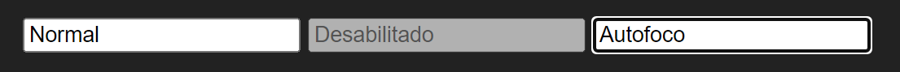

Controles HTML costumam ser exibidos em conjunto dentro de um formulário, por exemplo, teremos um campo para o nome, outro para o sobrenome e outro para a idade. Devemos fornecer uma maneira que o usuário navegue pelos controles sem ter de pegar o mouse para clicar, isso é feito com a tecla TAB, passando de um campo para o próximo, e com Shift+TAB, retornando de um campo para o anterior. Esse comportamento é controlado pelo atributo tabindex:
<input type="text" tabindex="1"><br> <input type="text" tabindex="3"><br> <input type="text" tabindex="2"><br> <input type="text" tabindex="4"><br>
Neste exemplo, a ordem do foco do cursor é alternada levando o usuário do primeiro para o terceiro campo, depois para o segundo, e finalmente para o último, o que não é comum, pois devemos dispor os campos na ordem, correta, é importante que o próximo campo possua uma relação de ordem com o anterior, por exemplo, o usuário não pode ser levado para um campo de e-mail após um campo de nome, havendo ainda o sobrenome para preencher, veja um exemplo ideal:
<label for="nome">Nome:</label> <input id="nome" type="text" tabindex="1"><br> <label for="sobrenome">Sobrenome:</label> <input id="sobrenome" type="text" tabindex="2"><br> <label for="email">E-mail:</label> <input id="email" type="text" tabindex="3"><br>
Agora com a tecla TAB, o usuário pode navegar pelos campos na ordem em que ele gostaria de preenchê-los.
Quando alternamos entre um campo e outro, estamos mudando o foco do cursor de um elemento para outro, quando um elemento recebe o foco ele se torna ativo, podemos definir o foco automático de um campo de maneira que, assim que o usuário acessar a página, será direcionado automaticamente para aquele campo e poderá começar a digitar sem ter de clicar ou usa o TAB, para tal adicionamos o atributo autofocus:
<label for="nome">Nome:</label> <input id="nome" type="text" autofocus><br> <label for="sobrenome">Sobrenome:</label> <input id="sobrenome" type="text"><br>
Neste exemplo, o cursor estará no campo nome assim que a página for carregada.
De acordo com a lógica da página pode ser necessário impedir que o usuário acesse um campo, nesse caso, o campo pode ser marcado com o atributo disabled, ele continua visível, no entanto, com um visual diferente e indisponível seja pelo tabindex, seja com clique:
<input type="text" disabled>
Veja a diferença entre um controle em estado normal com autofoco, e desabilitado:
